blob-turntable — 12 frames
backend=webgpu pitch=0.12 dist=2.4
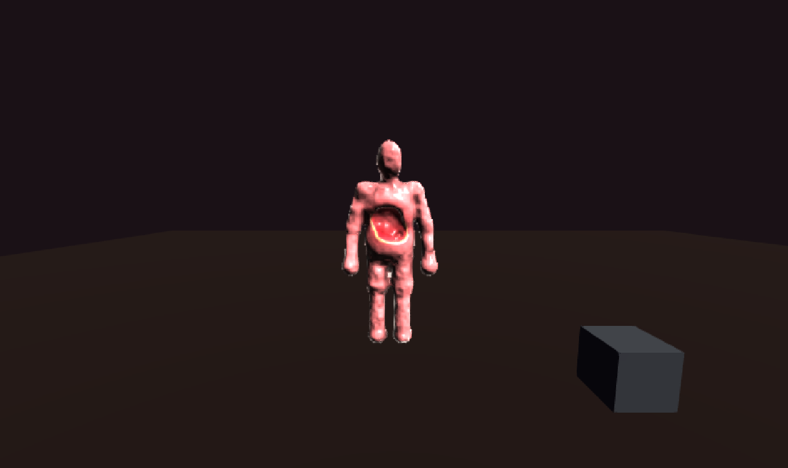
yaw 0° · std 21.39
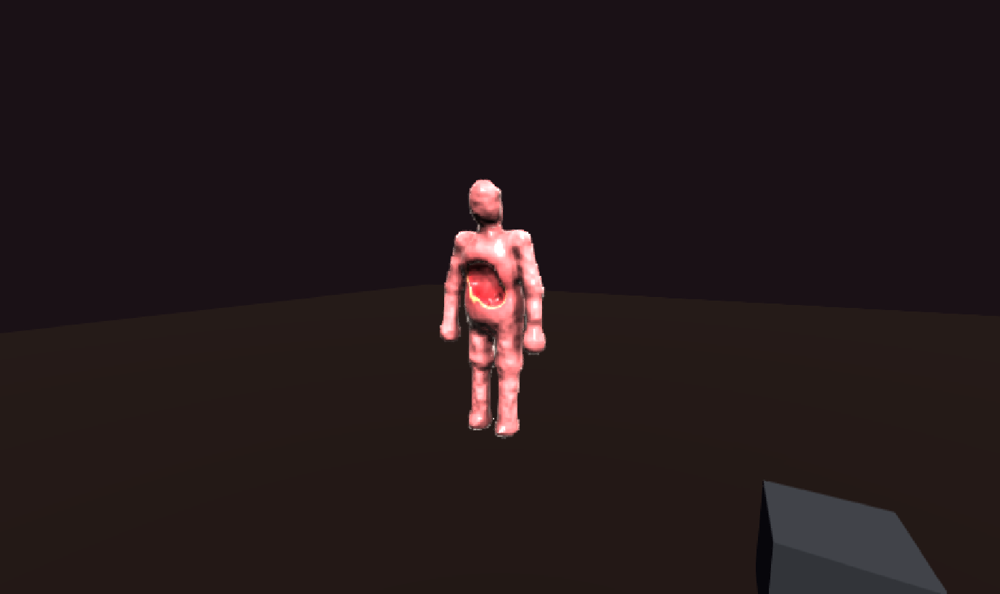
yaw 30° · std 22.76
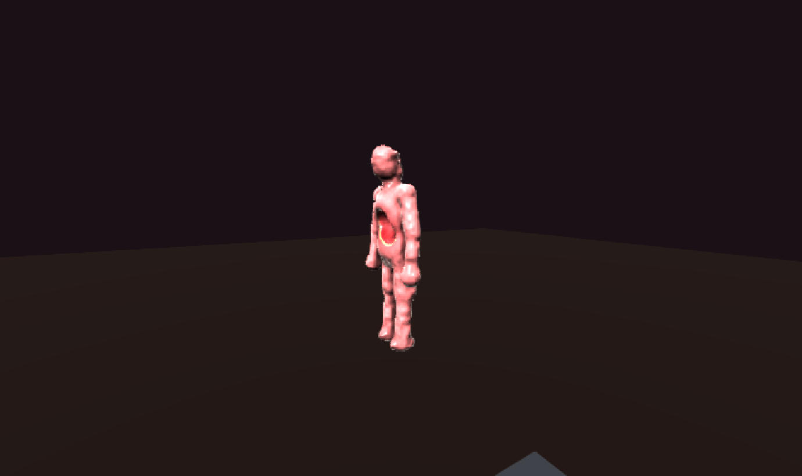
yaw 60° · std 20.51
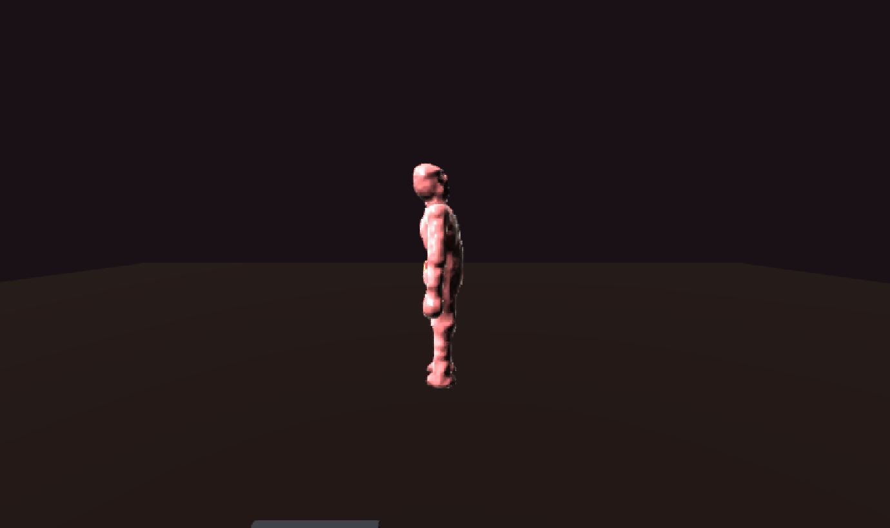
yaw 90° · std 14.83
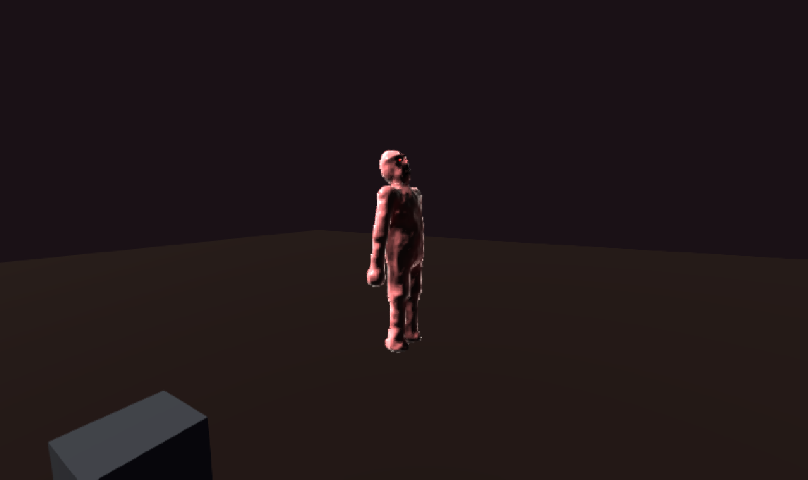
yaw 120° · std 12.75
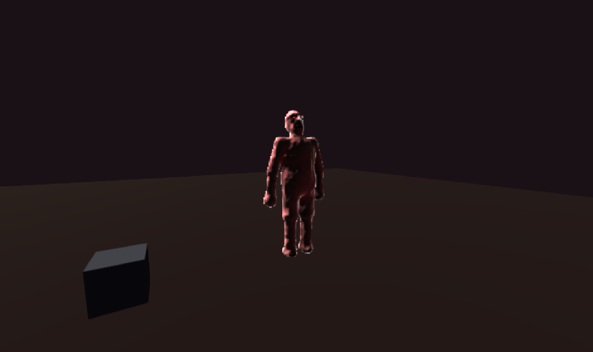
yaw 150° · std 9.29
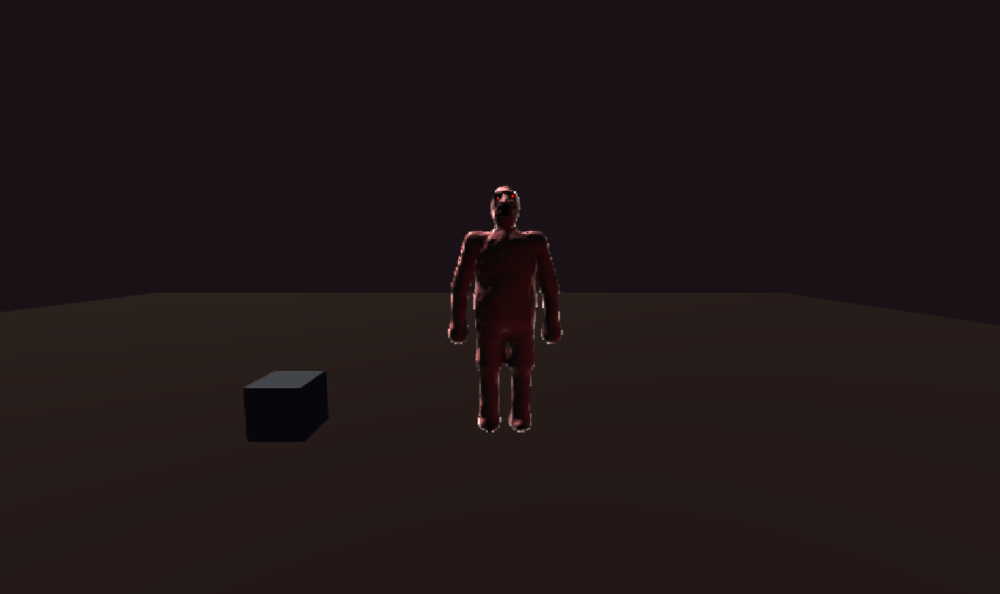
yaw 180° · std 7.34
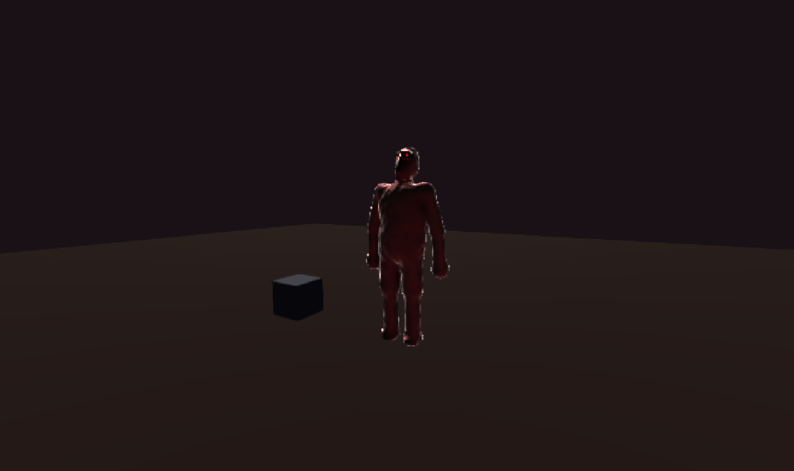
yaw 210° · std 6.43
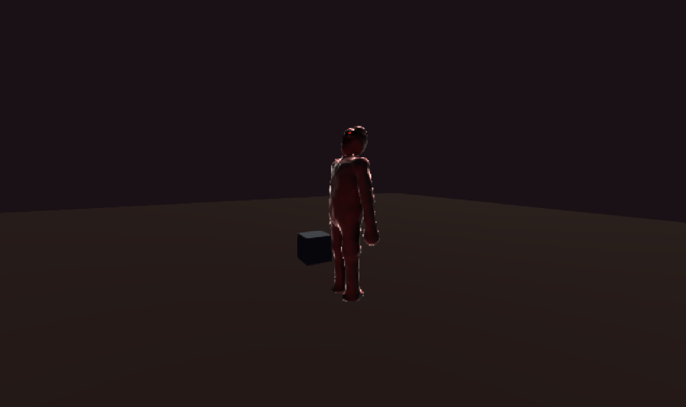
yaw 240° · std 6.33
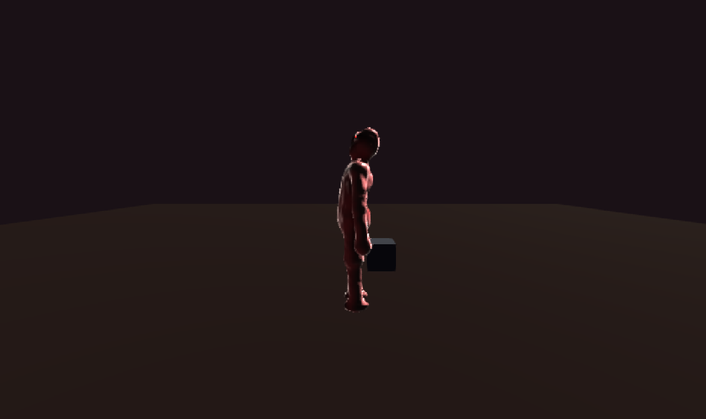
yaw 270° · std 7.79
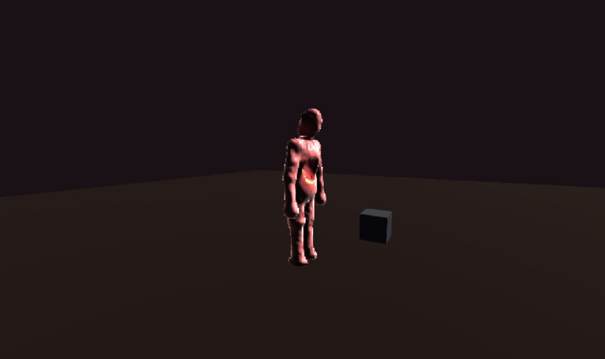
yaw 300° · std 13.67
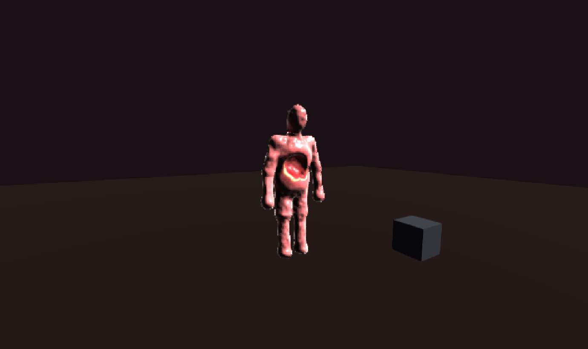
yaw 330° · std 18.85